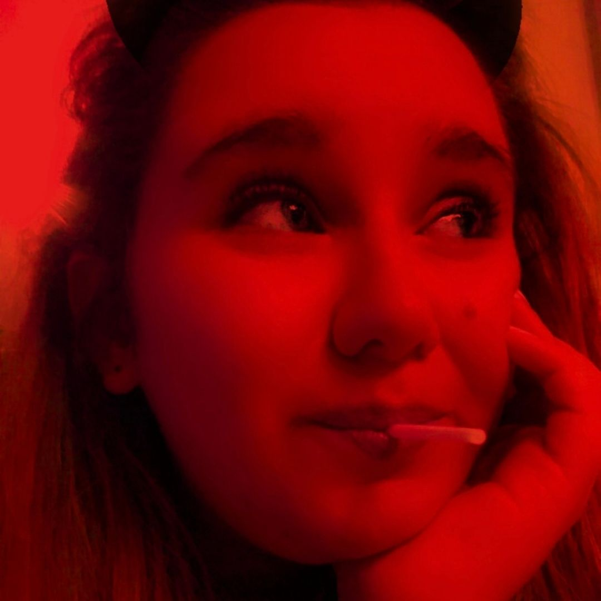

Lola Karo

Mon expérience
- Depuis Septembre 20201 : Cogito Strategy
- Partener Relationship Manager :
- Création de contenus pour la filiale Boostitude,
- Webmarketing sur des réseaux sociaux,
- Planification des publications et création de visuels.
- SEO.
- De Mai à Juillet 2020 : Cogito Strategy
- Social Manager :
- Création de contenus pour la filiale Boostitude,
- Webmarketing sur des réseaux sociaux,
- Planification des publications et création de visuels,
- SEO.
- 2020 : Le MoussailLyon
- Community Manager :
- Élaboration de la stratégie de communication et de la ligne éditoriale,
- Réalisation d'un site Internet, d'une page Facebook et Instagram avec mise en place d'un chatbot,
- Animation et gestion des réseaux sociaux.
- Depuis Janvier 2020 : UEJF
- Responsable Communication :
- Organisation d événements et communication,
- Animation et gestion des réseaux sociaux Instagram (sondage, question, compte à rebours) et Facebook pour les événements,
- De 2019 à 2020 : Léonidas
- Community Manager :
- Animation et gestion des réseaux sociaux Instagram, Facebook avec publication de post promotionnels.
- Février et Décembre 2019 : Léonidas
- Vendeuse :
- Conseil clients,
- Gestion des stocks,
- Gestion des livraisons.
Mes compétences
- Animation d'équipe et/ou de réseaux
- Créativité et conception (E-portefolio)
- Proactive
- Travailler en équipe
Ma formation
- Depuis Septembre 2021 : Master 1 Marketing Digital et Business
- ESDES Lyon Business School
- 2021 : Certifications Google "Google Analytics pour les débutants" et "Cours Google Analytics avancé"
- 2020 : Certification Google "Fondamentaux du marketing numérique"
- De 2018 à 2021 : Bachelor Marketing et Communication Digitale
- ESDES Lyon Business School
- Semestre 3 à l'Universidad del Salvador (Argentine) - Cours en anglais
- De Septembre 2017 à Juin 2018 : Baccalauréat ES (spécialité mathématiques)
- Lycée Saint Exupéry, Lyon
- 2016 : BAFA
- Lycée Saint Exupéry, Lyon